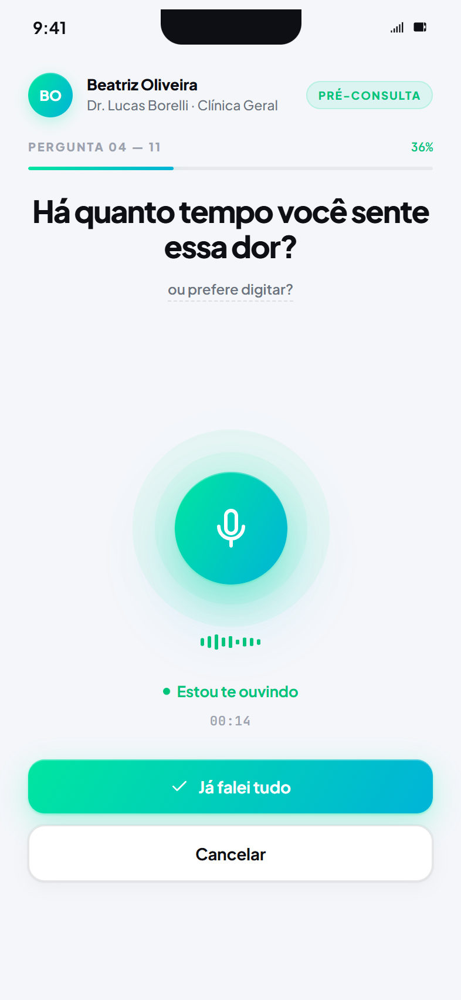
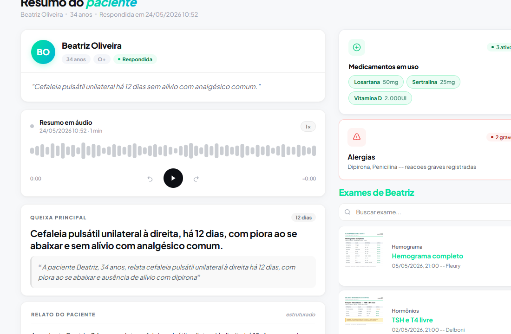
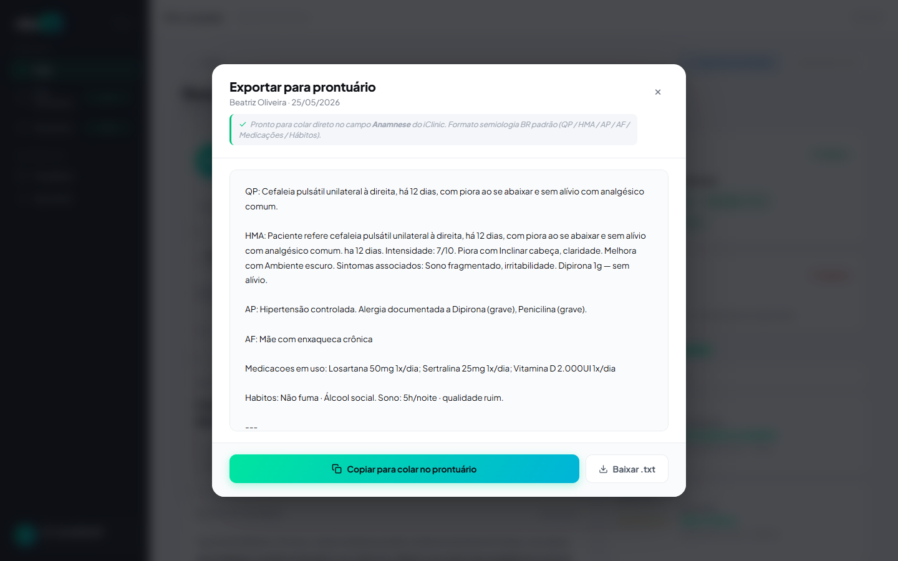

60 segundos de áudio gerados das respostas do paciente. Queixa, histórico, sinais na voz — estruturado pra você decidir, não pra digitar.

O paciente cadastra uma vez. Você vê a tendência clínica e a alergia em destaque — mesmo se ele nunca tiver entrado na sua clínica antes.

Anamnese, decisão e prescrição estruturadas. Exporta em 1 clique pro iClinic, Memed ou seu sistema. Você não escreve duas vezes.
